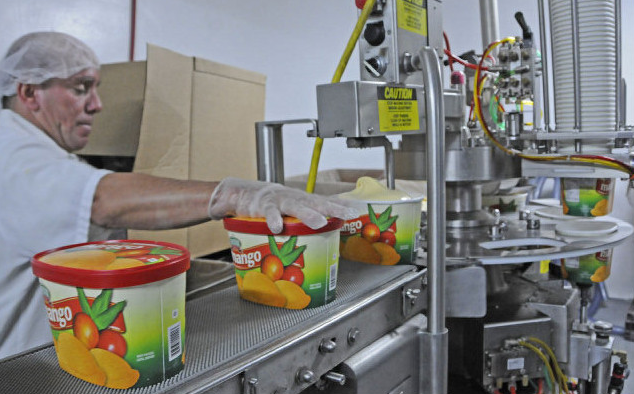

Valentini Ice Cream has been delivering a unique blend of premium ice cream with tropical flavors since 1966. Family owned and operated since day one, the core values established early on remain at the focal point of everything we do. We pride ourselves in providing the ultimate levels of customer satisfaction and service across all channels. Our top priority is to make sure all our delicious ice cream and desserts are made from the highest quality ingredients.
Our premium ice cream can be found across various channels including both food services and grocer industries. From Mainstream and Latin ice cream flavors to Specialty Premium Ice Cream and Gourmet desserts, we offer a wide selection of products throughout our portfolio.
Throughout the years, we have experienced tremendous growth and expansion in South Florida across major grocers such as Publix, Sedanos, Walmart and Winn Dixie. You can also find Valentini desserts in restaurants like Vallagio, Carpacio and even Johnny Rockets. In addition to our hometown growth, we continue to expand nationally as far north as New York and into the Caribbean as far south as Puerto Rico, where we are recognized by our fans for the authentic flavors featured in all of our ice cream.
It was always our dream to see our ice cream on the shelf
- Charlie Wright

Quality is ensured for each and every product.
What is happening is a growing presence in the $10 billion a year ice cream industry. Annual sales for Valentini are now approaching $20 million, with 45 employees split between a Hialeah factory and a Medley office, Wright said. Driven in large part by the launch of its own Hispanic flavors brand in 2009, Wright said Valentini has grown on average 18 percent annually, despite the recession that has crippled the rest of the country.
Distribution has spread from its South Florida niche to central and north Florida, Texas, New York and New Jersey, as well as the Caribbean and South and Central America. And on June 10, Valentini will begin producing its Hispanic flavors in New York as part of a deal with Fieldbrook Foods, a Buffalo-based company that produces 25 million gallons of ice cream annually. In addition to our hometown growth, we are recognized by our fans for the authentic flavors featured in all of our ice cream.